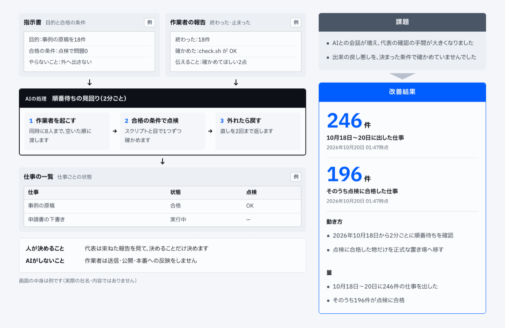
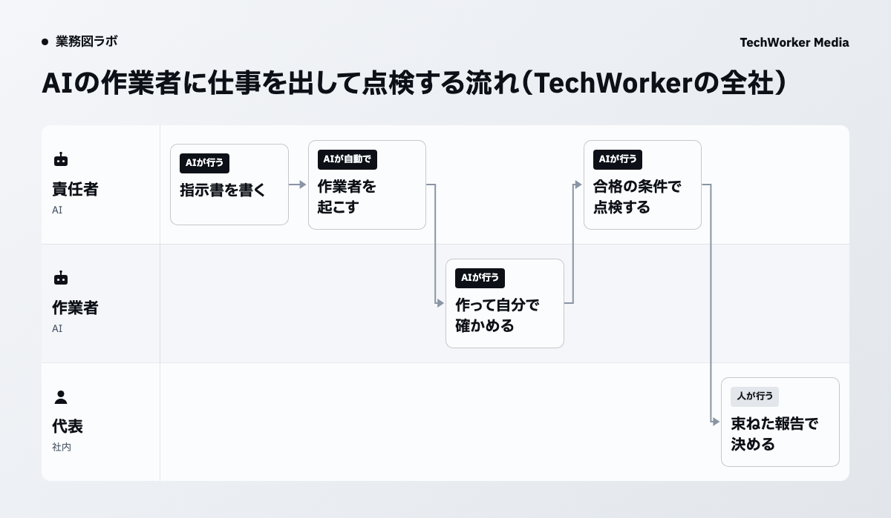

当社では、責任者のAIが作業者のAIに仕事を出しています
TechWorkerでは2026年10月18日から、責任者のAIが仕事を指示書にし、空いている別のアカウントのAIに出しています。10月18日から20日までに246件の仕事を出し、そのうち196件が点検に合格しました。

作業者に渡すのは、目的と合格の条件を書いた指示書です。作業者は終わったか止まったかを報告で返します。責任者の手元には、仕事ごとの状態の一覧が残ります。
仕組みの全体は事例のページ「AIの作業者に仕事を出し、合格の条件で点検します」にまとめています。
AIとの会話が増え、代表の確認の手間が大きくなりました
代表はAIとの会話を何本も立てて、出来をそれぞれ自分で確かめていました。会話が増えるほど、確認の手間が大きくなります。
出来の良し悪しを、決まった条件で確かめてもいませんでした。今は、仕事を指示書と点検の形にそろえ、作業と点検を分けて回しています。
起こす・点検する・戻すを、責任者のAIが回します
責任者のAIがする処理は3つです。作業者を起こす、合格の条件で点検する、外れたら戻す、の3つです。

責任者のAIは2分ごとに順番待ちを確かめ、空いた順に作業者へ渡します。同時に動くのは8人までです。
作業者は作って、自分で確かめます。責任者のAIはスクリプトと目で、合格の条件を1つずつ確かめます。
外れた物には直しを2回まで返します。点検に合格した物だけを正式な置き場へ移します。
外へ出すのは、代表の承認の後です
作業者は送信・公開・本番への反映をしません。外へ出すのは、代表の承認の後です。
代表には束ねて1回だけ報告します。代表は束ねた報告を見て、決めることだけを決めます。
10月18日から20日までに246件を出し、196件が合格しました
10月18日から20日までに246件の仕事を出し、そのうち196件が点検に合格しました。
点検に合格した物だけを正式な置き場へ移しています。
自社で試すときは、合格の条件を指示書に先に書きます
自社で同じ形を試すなら、仕事を出す前に、合格の条件を指示書に書きます。ここからは本記事の提案です。
合格の条件が先にあれば、作業者も点検する側も同じ物差しで確かめられます。
やらないことも指示書に書きます。外へ出す操作のように、人の承認が要る物は、作業者にさせない側に置きます。
業務図で、AIが作る所と人が承認する所を分けます
AIに仕事を出す形は、AIが作る所と人が承認する所を分けると、任せる範囲がはっきりします。業務図はその分け方を1枚で確かめる道具です。
ギョウムズAIは聞き取り・資料・業務の記録の3つから、AIが部署の業務図を作るサービスです。2週間の無料検証から始められます。
出典と、本記事で提案した範囲
- TechWorker社内の作業の管理の設定と記録（2026年10月20日時点）。公開資料ではありません。
- TechWorker「AIエージェントの事例」の事例のページ（2026年10月20日公開）。
流れ、作業者がしないこと、出した仕事と合格の件数は、当社の設定と記録にある事実です。合格の条件を指示書に先に書くことは、本記事の提案です。代表の確認の時間の変化は本記事では扱いません。